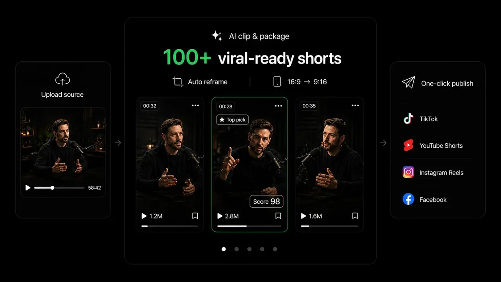
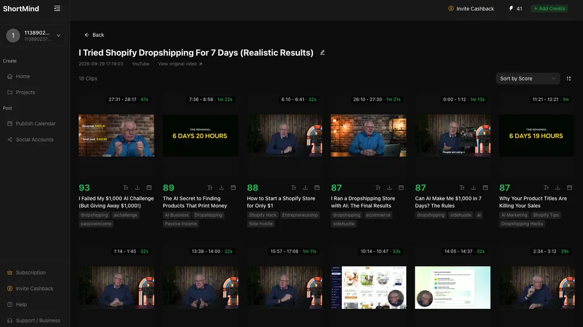
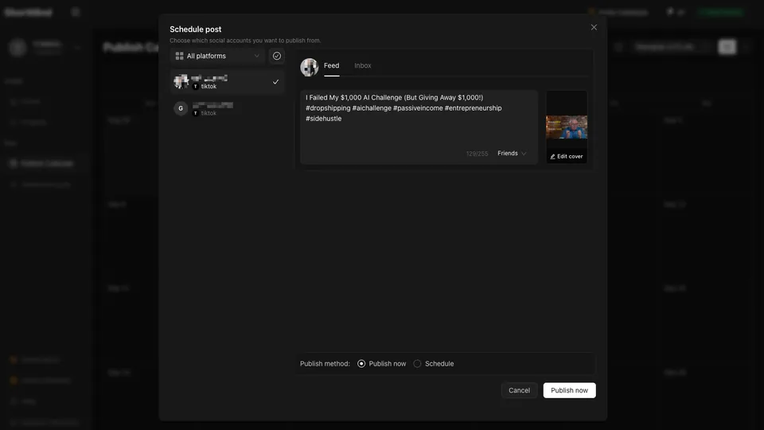

AI highlight detection
Find compelling moments through dialogue, key ideas and emotional cues, without watching the same video again and again.
Give your best content a second life. ShortMind finds the highlights, creates captioned short videos, and brings editing and social publishing into one AI-powered workflow.
Explore the product on shortmind.ai · Find this website on GitHub

An AI content growth engine for creators and teams with a library of long-form videos.
Find compelling moments through dialogue, key ideas and emotional cues, without watching the same video again and again.
Compare clips with a 0–100 Viral Score and bring engaging moments to the opening. Use the score to guide your editorial decisions.
Generate subtitles and choose caption styles to make your clips easier to follow across languages.
Keep faces and subjects in focus as you adapt videos to 9:16, 1:1 and 4:5 formats for social feeds.
Enrich your story with relevant B-roll and generate titles, descriptions and hashtags for each clip.
Bring editing and distribution together for TikTok, YouTube Shorts, Instagram Reels, LinkedIn, Facebook and X.
Spend more time shaping your story and less time on repetitive editing tasks.
Start with a podcast, interview, course, livestream or another long-form recording.
Review suggested clips, compare scores, and refine captions, hooks and framing.
Create platform-ready short videos and manage your social publishing workflow.

Review generated clips and their scores before choosing what to share.

Prepare posts and schedules in the same workflow as your clips.
Made for podcasters, educators, interview hosts, livestream creators, sports publishers, marketing teams and media agencies.
ShortMind is an AI video clipping and content repurposing platform. It helps creators turn long-form videos into short clips with highlights, captions, reframing and social publishing tools.
100+ viral-ready shorts describes the product’s content repurposing ambition. The number of useful clips depends on the source video’s length, content and settings. A Viral Score is an estimate, and does not guarantee reach or virality.
Visit shortmind.ai for the current product, available features, plans and account access. This GitHub Pages site introduces the brand and links to the official website.
The linked repository contains this static brand website and its documentation. To use the ShortMind video product, visit the official website.
Discover ShortMind’s AI video clipping tools and turn your next long video into a new content library.